Camera thực địa trả về ảnh nhòe, vỡ nén, thiếu sáng, lóa. Lọt vào tập train thì model học sai; chụp lại thì tốn tiền. Người duyệt chỉ có 20 lượt xem — pipeline phải xếp ảnh đáng ngờ nhất lên đầu và đề xuất KEEP / RECAPTURE.
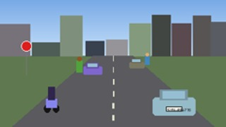
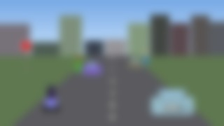
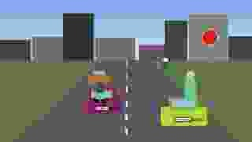
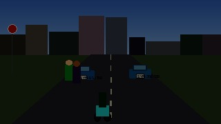
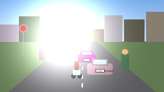
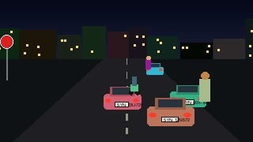
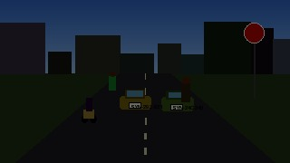
Độ sáng tuyệt đối gần bằng nhau. Phải so với ảnh cùng điều kiện sáng, không so với một ngưỡng chung.
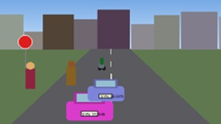
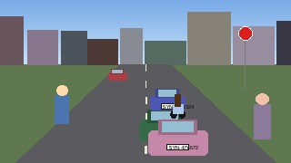
Ảnh sạch của cam_B "mềm" hơn cam_A ~6 lần → ngưỡng Laplacian báo nhầm cả loạt ảnh tốt.
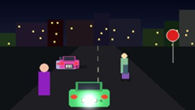
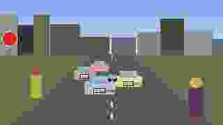
Lóa trên biển số và pixel hoá còn tăng độ nét đo được → Laplacian đẩy chúng xuống cuối hàng chờ.
Thang log tách rõ nhòe thật (lap 2–6) khỏi cam_B mềm (lap 160+).
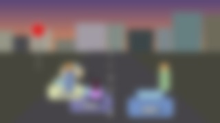
Ảnh sạch 0.7–1.7, vỡ nén phần lớn 1.9–3.7. Không phụ thuộc độ nét.
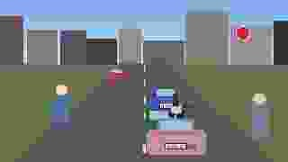
Ảnh đêm sạch có tỉ lệ ≈ 1 → không bị loại oan.
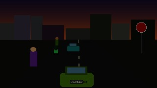
Bắt cả lóa nhỏ trên biển số mà trung bình toàn ảnh không thấy.
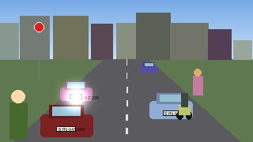
| Chỉ số | Random | Laplacian | PoC |
|---|---|---|---|
| Defect Recall@20 | 0.50 | 0.85 | 1.00 |
| Precision@20 | 0.50 | 0.85 | 1.00 |
| Ảnh sạch lọt top-20 · hoàng hôn | 50% | 50% | 0% |
| Ảnh sạch lọt top-20 · đêm | 75% | 25% | 0% |
| Đúng loại lỗi | — | — | 95% |
| KEEP/RECAPTURE · 96 ảnh | — | 23/48 · 5 nhầm | 47/48 · 0 nhầm |
Bảng 1. So sánh trên split eval; dòng cuối tính trên toàn bộ 96 ảnh.
Hình 2. Bốn ảnh baseline Laplacian xử lý sai, PoC xử lý đúng.
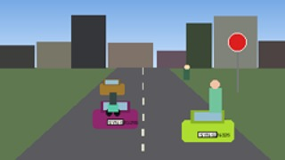
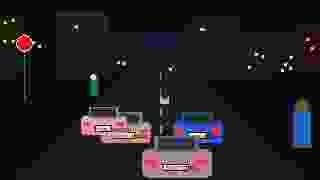
Số liệu tính bằng src.evaluate; tái lập đầy đủ trong notebook Colab.
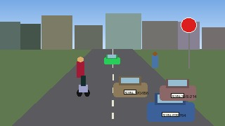
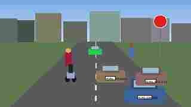
Root cause: 1.62 nằm trong vùng chồng lấn với ảnh sạch nhiễu nhất (1.66) → hạ ngưỡng sẽ gây báo nhầm. Cần so với ảnh gốc cùng cảnh.
47/96 ảnh (49%) cần chụp lại: 17 vỡ nén, 12 nhòe, 10 thiếu sáng, 8 lóa. Batch chưa đủ điều kiện release — chụp lại rồi chạy QC lần nữa.